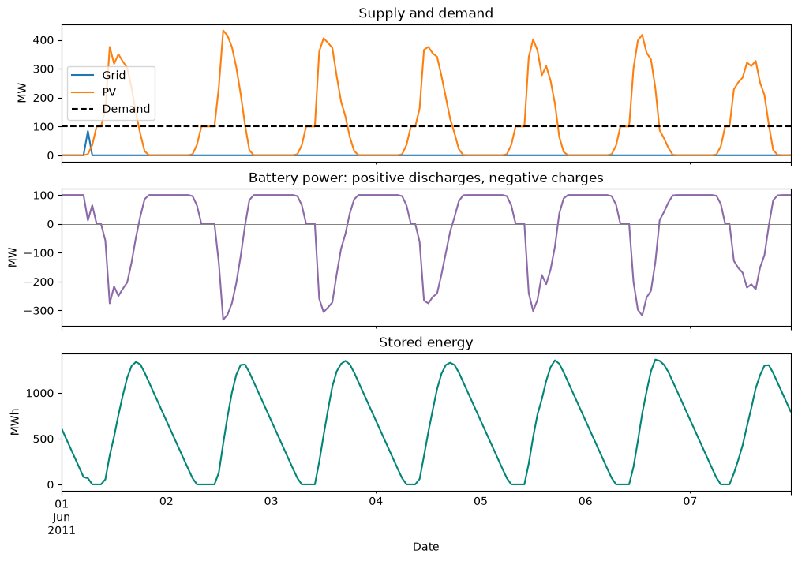
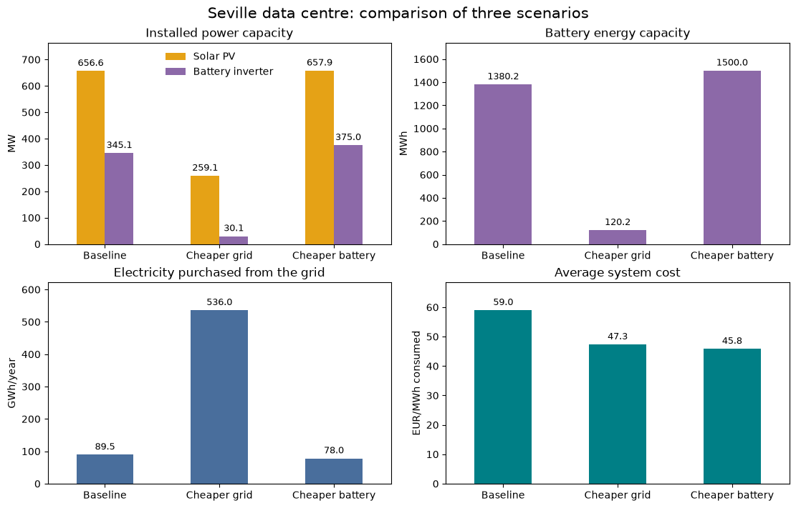

Investment and storage: when do PV and batteries help?#
PyPSA can choose both installed capacity and hourly operation. This lesson takes the investment question from Quickstart 3 and develops a reproducible comparison exercise.
Your task#
Compare supplying a constant 100 MW demand with grid electricity, PV, and a battery. Predict the effect of cheaper grid electricity and cheaper storage before solving. Select Python (pypsa-course) and run cells in order.
Learning objectives#
Distinguish fixed capacity from a capacity the solver may build.
Convert overnight costs into annual capital costs with consistent units.
Read battery power (MW), inventory capacity (MWh), and operation separately.
Explain a scenario response using both capacities and hourly operation.
This is the Seville reference setting, not Groningen. The input solar profile is linked by the official example. It is a modelled availability profile, not electricity measured from our chosen plant. The Groningen case will use the instructor’s separate datasets.
import logging
import numpy as np
import pandas as pd
import matplotlib.pyplot as plt
import pypsa
from pypsa.costs import annuity
from pathlib import Path
from urllib.request import urlretrieve
import logging
import warnings
logging.basicConfig(level=logging.INFO)
logging.getLogger("gurobipy").propagate = False
warnings.filterwarnings("ignore", message="The locs attribute was deprecated")
warnings.filterwarnings("ignore", module="pypsa.network.transform")
pypsa.options.params.optimize.log_to_console = False
from pandas.errors import Pandas4Warning
with warnings.catch_warnings():
warnings.simplefilter("ignore", Pandas4Warning)
warnings.filterwarnings("error", category=DeprecationWarning)
# You probably need to install the following package to use the plotly backend for plotting:
# conda install -n pypsa-clean -c conda-forge "nbformat>=4.2.0"
# Also you will need openpyxl to export to Excel files:
# conda install -n pypsa-clean -c conda-forge openpyxl
Part 1: Problem Description#
(here we will use the same instructions given in Quickstart 3 - Investments & Storage from PyPSA documenation)
A data centre in Seville, Spain, has a constant demand of 100 MW. The operator considers investing in on-site solar PV and battery storage to reduce reliance on grid electricity, which is priced at 120 €/MWh. The investment costs and characteristics of the components are as follows:
Component |
Overnight Cost |
Lifetime |
Discount Rate |
|---|---|---|---|
Solar PV |
400 €/kW |
25 years |
5% |
Battery Storage |
150 €/kWh |
25 years |
5% |
Battery Inverter |
170 €/kW |
10 years |
5% |
The battery storage system has a round-trip efficiency of 90% and an energy-to-power ratio of 4 hours.
The solar PV plant has a capacity factor time series given here.
Assume that feeding electricity into the grid is not allowed.
Find the least-cost investment in solar PV and battery storage to cover the load. What is the average cost per unit of electricity consumed? How much electricity is consumed from the grid and when? How is the battery operated?
PyPSA Solution#
We start by creating a new network with a single bus and the data centre load. We also add a generator to model supply from the grid priced at 120 €/MWh. These are the fixed components of the network.
n = pypsa.Network()
n.add("Bus", "seville")
n.add("Load", "demand", bus="seville", p_set=100)
n.add("Generator", "grid", bus="seville", p_nom=100, marginal_cost=120, carrier="grid");
Next, we read in the capacity factor time series of the network, which covers hourly data for the year 2011.
p_max_pu = pd.read_csv(
"https://model.energy/data/time-series-f17c3736a2719ce7da58484180d89e2d.csv",
index_col=0,
parse_dates=True,
)["solar"]
p_max_pu[7:15]
time
2011-01-01 07:00:00 0.000
2011-01-01 08:00:00 0.000
2011-01-01 09:00:00 0.048
2011-01-01 10:00:00 0.118
2011-01-01 11:00:00 0.214
2011-01-01 12:00:00 0.243
2011-01-01 13:00:00 0.219
2011-01-01 14:00:00 0.138
Name: solar, dtype: float64
We need to tell PyPSA that these are the snapshots (time steps) we want to optimise over.
n.set_snapshots(p_max_pu.index)
len(n.snapshots)
8760
Then, we add the solar PV with the availability time series as p_max_pu, the annualised costs in €/MW/a as capital_cost and mark the component as extendable with p_nom_extendable.
n.add(
"Generator",
"solar",
bus="seville",
p_max_pu=p_max_pu,
capital_cost=annuity(0.05, 25) * 400_000,
p_nom_extendable=True,
carrier="solar",
);
Similarly, we add the battery storage. Here, we need to take extra care with the multiple cost components of the battery system for the capital_cost, which is given per MWh of energy capacity for stores, and the energy-to-power ratio (max_hours).
cc_inverter = annuity(0.05, 10) * 170_000
cc_storage = annuity(0.05, 25) * 150_000
n.add(
"Store",
"battery",
bus="seville",
capital_cost=cc_inverter / 4 + cc_storage,
e_nom_extendable=True,
carrier="battery",
efficiency_store=np.sqrt(0.9),
efficiency_dispatch=np.sqrt(0.9),
max_hours=4,
);
WARNING:pypsa.network.transform:The attribute 'max_hours' is a standard attribute for other components but not for stores. This could cause confusion and it should be renamed. See also: https://go.pypsa.org/warning-attr-misleading.
WARNING:pypsa.network.transform:The attribute 'efficiency_dispatch' is a standard attribute for other components but not for stores. This could cause confusion and it should be renamed. See also: https://go.pypsa.org/warning-attr-misleading.
WARNING:pypsa.network.transform:The attribute 'efficiency_store' is a standard attribute for other components but not for stores. This could cause confusion and it should be renamed. See also: https://go.pypsa.org/warning-attr-misleading.
Now, the model is ready to be solved:
n.optimize()
C:\Users\Alejandro Zabala\AppData\Local\Temp\ipykernel_1768\1261279110.py:1: FutureWarning: The default value of `include_objective_constant` will change from True to False in version 2.0. Set `include_objective_constant` explicitly to suppress this warning. Using False improves LP numerical conditioning by not including the objective constant as a variable.
n.optimize()
WARNING:pypsa.consistency:The following buses have carriers which are not defined. Run n.sanitize() to add them. Components with undefined carriers:
Index(['seville'], dtype='object', name='name')
WARNING:pypsa.consistency:The following generators have carriers which are not defined. Run n.sanitize() to add them. Components with undefined carriers:
Index(['grid', 'solar'], dtype='object', name='name')
WARNING:pypsa.consistency:The following stores have carriers which are not defined. Run n.sanitize() to add them. Components with undefined carriers:
Index(['battery'], dtype='object', name='name')
INFO:linopy.model: Solve problem using Highs solver
INFO:linopy.model:Solver options:
- log_to_console: False
INFO:linopy.io:Writing objective.
Writing constraints.: 100%|██████████| 10/10 [00:00<00:00, 125.45it/s]
Writing continuous variables.: 100%|██████████| 5/5 [00:00<00:00, 394.91it/s]
INFO:linopy.io: Writing time: 0.12s
INFO:linopy.constants: Optimization successful:
Status: ok
Termination condition: optimal
Solution: 35042 primals, 70082 duals
Objective: 4.98e+07
Solver: highs
Runtime: 0.76s
MIP gap: inf
Dual bound: 0.00e+00
Solver model: available
Solver message: Optimal
INFO:pypsa.optimization.optimize:The shadow-prices of the constraints Generator-fix-p-lower, Generator-fix-p-upper, Generator-ext-p-lower, Generator-ext-p-upper, Store-ext-e-lower, Store-ext-e-upper, Store-energy_balance were not assigned to the network.
('ok', 'optimal')
To retrieve the optimised capacities, we can either directly access the p_nom_opt attribute of the components (e_nom_opt in MWh for the battery store), or use the n.statistics module.
display(n.generators.p_nom_opt)
display(n.stores.e_nom_opt)
name
grid 100.000000
solar 629.447181
Name: p_nom_opt, dtype: float64
name
battery 1326.902025
Name: e_nom_opt, dtype: float64
n.statistics.optimal_capacity(nice_names=False)
component carrier
Generator grid 100.00000
solar 629.44718
Store battery 1326.90203
dtype: float64
The statistics module also provides a convenient way to calculate investment and operational costs, as well as the average cost per unit of electricity consumed.
totex = {"opex": n.statistics.opex(nice_names=False), "capex": n.statistics.capex(nice_names=False)}
pd.concat(totex, axis=1).div(1e6).round(2) # M€/a
| opex | capex | ||
|---|---|---|---|
| component | carrier | ||
| Generator | grid | 10.48 | NaN |
| solar | NaN | 17.86 | |
| Store | battery | NaN | 21.43 |
average_cost = (
n.statistics.capex(nice_names=False).sum()
+ n.statistics.opex(nice_names=False).sum()
) / (100 * 8760)
print(f"Average electricity cost: {average_cost:.2f} €/MWh")
Average electricity cost: 56.82 €/MWh
To access and plot the state of charge profile of the battery for January, run
n.stores_t.e.loc["2011-01"].plot(backend="plotly")
Finally, any network object can be exported to files, for example to Excel or NetCDF, for further analysis or reporting. Importing from files is of course also possible.
n.export_to_excel("data-centre-investment.xlsx")
# Ignore pandas deprecation notices only for these two operations.
with warnings.catch_warnings():
warnings.simplefilter("ignore", Pandas4Warning)
n.export_to_netcdf("data-centre-investment.nc")
o = pypsa.Network("data-centre-investment.nc")
print(f"Reloaded network with {len(o.snapshots):,} snapshots.")
INFO:pypsa.network.io:Exported network 'Unnamed Network' saved to 'data-centre-investment.xlsx contains: buses, loads, sub_networks, stores, generators
INFO:pypsa.network.io:Exported network 'Unnamed Network' saved to 'data-centre-investment.nc contains: buses, loads, sub_networks, stores, generators
INFO:pypsa.network.io:Imported network 'Unnamed Network' has buses, generators, loads, stores, sub_networks
Reloaded network with 8,760 snapshots.
Part 2: Extend the saved Seville model#
The cells above reproduce the starting exercise and end by exporting and reopening the network as o. Start from that reopened network. It already contains the bus, demand, grid generator, PV generator and all 8,760 hourly solar values. We do not need to download the solar profile or rebuild those components.
The Quickstart uses a Store to choose energy capacity. In PyPSA, the grid element “Store” does not enforce max_hours, efficiency_store or efficiency_dispatch passed in that example. To test the stated four-hour battery with 90% round-trip efficiency, we first replace it with a StorageUnit in a separate copy. We then change one cost at a time relative to that new baseline.
1. Inspect the imported network#
Check the component names before editing them. The reopened network o stays available for comparison.
display(o.buses[["carrier"]])
display(o.loads[["bus", "p_set"]])
display(o.generators[["bus", "p_nom", "p_nom_extendable", "marginal_cost"]])
display(o.stores[["bus", "e_nom_extendable", "capital_cost"]])
print(f"Hourly snapshots: {len(o.snapshots):,}")
| carrier | |
|---|---|
| name | |
| seville | AC |
| bus | p_set | |
|---|---|---|
| name | ||
| demand | seville | 100.0 |
| bus | p_nom | p_nom_extendable | marginal_cost | |
|---|---|---|---|---|
| name | ||||
| grid | seville | 100.0 | False | 120.0 |
| solar | seville | 0.0 | True | 0.0 |
| bus | e_nom_extendable | capital_cost | |
|---|---|---|---|
| name | |||
| battery | seville | True | 16146.813031 |
Hourly snapshots: 8,760
2. Copy the network and remove the original Store#
Keep the bus, demand, grid import limit and PV profile. Remove only the original battery from the copy; otherwise two batteries could serve the same load.
import warnings
from pandas.errors import Pandas4Warning
warnings.simplefilter("ignore", category=Pandas4Warning)
baseline = o.copy()
baseline.remove("Store", "battery")
# Define any carriers that the exported Quickstart did not register.
for carrier in ["AC", "grid", "solar", "battery"]:
if carrier not in baseline.carriers.index:
baseline.add("Carrier", carrier)
3. Define battery inputs and add the StorageUnit#
Reuse cc_inverter and cc_storage from the Quickstart. The first is the annual inverter cost per MW; the second is the annual energy-capacity cost per MWh. This time, PyPSA charges investment per MW of battery power. Multiply the energy cost by \(H=4\) h before adding it to the inverter cost. For example, a 10 MW inverter is paired with a 40 MWh energy limit.
We split the 90% round-trip efficiency equally across charging and discharging, so each efficiency is \(\sqrt{0.90}\). Cyclic state of charge makes the end-of-year inventory equal the starting inventory.
battery_hours = 4.0
eta = np.sqrt(0.90)
battery_capital_cost = cc_inverter + battery_hours * cc_storage
baseline.add("StorageUnit", "battery", bus="seville", carrier="battery",
p_nom_extendable=True, max_hours=battery_hours,
capital_cost=battery_capital_cost,
efficiency_store=eta, efficiency_dispatch=eta,
cyclic_state_of_charge=True)
display(baseline.storage_units[["max_hours", "capital_cost",
"efficiency_store", "efficiency_dispatch"]])
# Take the scenario copy before solving so it has no attached solver model.
scenario_template = baseline.copy()
| max_hours | capital_cost | efficiency_store | efficiency_dispatch | |
|---|---|---|---|---|
| name | ||||
| battery | 4.0 | 64587.252124 | 0.948683 | 0.948683 |
From components to equations#
Investment decisions: \(P_{\rm PV}\) and \(P_{\rm B}\) are PV and battery power capacity (MW). Both are nonnegative. Hourly decisions: \(g_t^{\rm grid}\) and \(g_t^{\rm PV}\) are supply (MW); \(q_t^{\rm ch}\) and \(q_t^{\rm dis}\) are nonnegative battery charging and discharging power at the bus (MW); \(e_t\) is the end-of-hour stored energy (MWh).
Let \(k_{\rm PV}\) and \(k_{\rm B}\) be the annualised investment rates in EUR/(MW year), and let \(c_{\rm grid}\) be the grid purchase price in EUR/MWh. For this one-year model, the objective is:
The first term pays for installed capacity once for the modelled year. The second pays for the electricity purchased hour by hour. In the code, \(k_{\rm B}\) is \(\alpha(k_{\rm inv}+Hk_{\rm storage})\), where \(\alpha\) scales the combined battery cost.
The generator limits and bus balance apply at every snapshot:
Here \(a_t\) is the input solar availability fraction and \(D_t\) is the site load in MW. Charging is a withdrawal from the bus, just like demand. The PV inequality allows the model to use less than the available output.
The battery limits and energy balance connect the hours:
Here \(H\) is max_hours, \(e_0\) is energy just before the first hour, and \(e_T\) is energy just after the last hour. We assume no standing losses or inflow. Charging puts only a fraction \(\eta_{\rm ch}\) of the withdrawn electricity into the battery. Delivering one MWh from the battery to the bus uses \(1/\eta_{\rm dis}\) MWh of stored energy. The cyclic condition prevents the model from drawing down a free initial inventory over the year.
For example, with 10 MW charging for one hour and \(\eta_{\rm ch}=\sqrt{0.9}\), stored energy rises by about 9.49 MWh. Discharging that energy later returns 9 MWh to the bus. This is how the two efficiencies give a 90% round trip.
These expressions are linear: availability, duration and efficiencies are fixed inputs. PyPSA chooses capacities and all hourly schedules together. HiGHS is called with the direct interface and one thread; the code checks for an optimal solution before reading it.
4. Solve the new baseline#
Check the termination condition before reading the outputs. In the extension we explicitly select HiGHS with one thread. The original Quickstart solve above is preserved.
status, condition = baseline.optimize(
solver_name="highs", io_api="direct", threads=1,
log_to_console=False, include_objective_constant=False,
)
if (status, condition) != ("ok", "optimal"):
raise RuntimeError(f"No optimal solution: {status}, {condition}")
INFO:linopy.model: Solve problem using Highs solver
INFO:linopy.model:Solver options:
- threads: 1
- log_to_console: False
INFO:linopy.constants: Optimization successful:
Status: ok
Termination condition: optimal
Solution: 43802 primals, 105122 duals
Objective: 5.17e+07
Solver: highs
Runtime: 2.36s
MIP gap: inf
Dual bound: 0.00e+00
Solver model: available
Solver message: Optimal
INFO:pypsa.optimization.optimize:The shadow-prices of the constraints Generator-fix-p-lower, Generator-fix-p-upper, Generator-ext-p-lower, Generator-ext-p-upper, StorageUnit-ext-p_dispatch-lower, StorageUnit-ext-p_dispatch-upper, StorageUnit-ext-p_store-lower, StorageUnit-ext-p_store-upper, StorageUnit-ext-state_of_charge-lower, StorageUnit-ext-state_of_charge-upper, StorageUnit-energy_balance were not assigned to the network.
5. Read baseline capacities, then read hourly operation#
Read the chosen ratings first. Then use the hourly outputs to check that supply meets demand and that the battery inventory follows the energy-balance equation.
pv_mw = baseline.generators.at["solar", "p_nom_opt"]
battery_mw = baseline.storage_units.at["battery", "p_nom_opt"]
battery_mwh = battery_mw * battery_hours
print(f"PV: {pv_mw:.2f} MW")
print(f"Battery: {battery_mw:.2f} MW / {battery_mwh:.2f} MWh")
PV: 656.63 MW
Battery: 345.05 MW / 1380.21 MWh
# Charging is a withdrawal; discharging is an injection.
charge = baseline.storage_units_t.p_store["battery"]
discharge = baseline.storage_units_t.p_dispatch["battery"]
soc = baseline.storage_units_t.state_of_charge["battery"]
grid = baseline.generators_t.p["grid"]
solar = baseline.generators_t.p["solar"]
load = baseline.loads_t.p["demand"]
hours = baseline.snapshot_weightings.generators
np.testing.assert_allclose(grid + solar + discharge - charge, load,
atol=1e-4, rtol=0)
# The last hour supplies the previous inventory for the first hour.
previous_soc = np.roll(soc.to_numpy(), 1)
np.testing.assert_allclose(
soc - previous_soc,
(eta * charge - discharge / eta) * baseline.snapshot_weightings.stores,
atol=1e-4, rtol=0,
)
assert charge.max() <= battery_mw + 1e-4
assert discharge.max() <= battery_mw + 1e-4
assert soc.min() >= -1e-4 and soc.max() <= battery_mwh + 1e-4
demand_mwh = load.mul(hours).sum()
grid_mwh = grid.mul(hours).sum()
print(f"Annual demand: {demand_mwh:,.0f} MWh")
print(f"Annual grid imports: {grid_mwh:,.0f} MWh")
print(f"Average system cost: {baseline.objective / demand_mwh:.2f} EUR/MWh")
Annual demand: 876,000 MWh
Annual grid imports: 89,491 MWh
Average system cost: 58.97 EUR/MWh
In the week below, compare the hours with grid imports to the battery’s charging and discharging. The first two panels show power in MW; the last panel shows energy in MWh.
week = slice("2011-06-01", "2011-06-07 23:00")
fig, axes = plt.subplots(3, 1, figsize=(10, 7), sharex=True, layout="constrained")
grid.loc[week].plot(ax=axes[0], label="Grid")
solar.loc[week].plot(ax=axes[0], label="PV")
load.loc[week].plot(ax=axes[0], color="black", linestyle="--", label="Demand")
axes[0].set(ylabel="MW", title="Supply and demand")
axes[0].legend()
(discharge - charge).loc[week].plot(ax=axes[1], color="#8c69a8")
axes[1].axhline(0, color="grey", linewidth=0.7)
axes[1].set(ylabel="MW", title="Battery power: positive discharges, negative charges")
soc.loc[week].plot(ax=axes[2], color="#008576")
axes[2].set(ylabel="MWh", xlabel="Date", title="Stored energy")
plt.show()

6. Scenario A — Cheaper grid electricity#
Start from the unsolved template. Reduce only the import price from 120 to 60 EUR/MWh. This changes the coefficient on hourly grid purchases in the objective. Predict whether the site will import more and invest less before solving.
cheaper_grid = scenario_template.copy()
cheaper_grid.generators.at["grid", "marginal_cost"] = 60.0
status, condition = cheaper_grid.optimize(
solver_name="highs", io_api="direct", threads=1,
log_to_console=False, include_objective_constant=False,
)
if (status, condition) != ("ok", "optimal"):
raise RuntimeError(f"No optimal solution: {status}, {condition}")
INFO:linopy.model: Solve problem using Highs solver
INFO:linopy.model:Solver options:
- threads: 1
- log_to_console: False
INFO:linopy.constants: Optimization successful:
Status: ok
Termination condition: optimal
Solution: 43802 primals, 105122 duals
Objective: 4.15e+07
Solver: highs
Runtime: 3.92s
MIP gap: inf
Dual bound: 0.00e+00
Solver model: available
Solver message: Optimal
INFO:pypsa.optimization.optimize:The shadow-prices of the constraints Generator-fix-p-lower, Generator-fix-p-upper, Generator-ext-p-lower, Generator-ext-p-upper, StorageUnit-ext-p_dispatch-lower, StorageUnit-ext-p_dispatch-upper, StorageUnit-ext-p_store-lower, StorageUnit-ext-p_store-upper, StorageUnit-ext-state_of_charge-lower, StorageUnit-ext-state_of_charge-upper, StorageUnit-energy_balance were not assigned to the network.
7. Scenario B — Cheaper battery equipment#
Start again from the same template, so the grid price stays at 120 EUR/MWh. Halve the battery’s combined inverter and energy investment rate. Its efficiency and four-hour ratio stay fixed.
cheaper_battery = scenario_template.copy()
cheaper_battery.storage_units.at["battery", "capital_cost"] = 0.5 * battery_capital_cost
status, condition = cheaper_battery.optimize(
solver_name="highs", io_api="direct", threads=1,
log_to_console=False, include_objective_constant=False,
)
if (status, condition) != ("ok", "optimal"):
raise RuntimeError(f"No optimal solution: {status}, {condition}")
INFO:linopy.model: Solve problem using Highs solver
INFO:linopy.model:Solver options:
- threads: 1
- log_to_console: False
INFO:linopy.constants: Optimization successful:
Status: ok
Termination condition: optimal
Solution: 43802 primals, 105122 duals
Objective: 4.01e+07
Solver: highs
Runtime: 2.74s
MIP gap: inf
Dual bound: 0.00e+00
Solver model: available
Solver message: Optimal
INFO:pypsa.optimization.optimize:The shadow-prices of the constraints Generator-fix-p-lower, Generator-fix-p-upper, Generator-ext-p-lower, Generator-ext-p-upper, StorageUnit-ext-p_dispatch-lower, StorageUnit-ext-p_dispatch-upper, StorageUnit-ext-p_store-lower, StorageUnit-ext-p_store-upper, StorageUnit-ext-state_of_charge-lower, StorageUnit-ext-state_of_charge-upper, StorageUnit-energy_balance were not assigned to the network.
8. Compare the three solutions#
Read the installed capacities first. Then compare imported energy and annual costs. The same 100 MW demand is served in each scenario. Average system cost is the annual objective divided by that scenario’s electricity consumption, in EUR/MWh.
cases = {"Baseline": baseline, "Cheaper grid": cheaper_grid,
"Cheaper battery": cheaper_battery}
# Read the capacity outputs directly from the solved component tables.
capacities = pd.DataFrame({
"PV capacity (MW)": {name: case.generators.at["solar", "p_nom_opt"]
for name, case in cases.items()},
"Battery power (MW)": {name: case.storage_units.at["battery", "p_nom_opt"]
for name, case in cases.items()},
})
capacities["Battery energy (MWh)"] = capacities["Battery power (MW)"] * battery_hours
display(capacities.round(2))
| PV capacity (MW) | Battery power (MW) | Battery energy (MWh) | |
|---|---|---|---|
| Baseline | 656.63 | 345.05 | 1380.21 |
| Cheaper grid | 259.07 | 30.05 | 120.21 |
| Cheaper battery | 657.89 | 375.00 | 1500.00 |
# Use the shared hourly weights to convert power to energy.
energy_and_cost = pd.DataFrame({
"Grid imports (MWh/year)": {name: case.generators_t.p["grid"].mul(hours).sum()
for name, case in cases.items()},
"Demand (MWh/year)": {name: case.loads_t.p["demand"].mul(hours).sum()
for name, case in cases.items()},
"Annual cost (EUR/year)": {name: case.objective for name, case in cases.items()},
})
energy_and_cost["Average cost (EUR/MWh)"] = (
energy_and_cost["Annual cost (EUR/year)"] / energy_and_cost["Demand (MWh/year)"]
)
np.testing.assert_allclose(energy_and_cost["Demand (MWh/year)"], 876_000)
assert (energy_and_cost["Annual cost (EUR/year)"] <= baseline.objective + 1).all()
display(energy_and_cost.round(2))
| Grid imports (MWh/year) | Demand (MWh/year) | Annual cost (EUR/year) | Average cost (EUR/MWh) | |
|---|---|---|---|---|
| Baseline | 89491.47 | 876000.0 | 51660859.06 | 58.97 |
| Cheaper grid | 536029.06 | 876000.0 | 41455293.86 | 47.32 |
| Cheaper battery | 78008.75 | 876000.0 | 40142870.71 | 45.83 |
To help the analysis, you can plot your results, and compare them:
import matplotlib.pyplot as plt
# Keep the same scenario order in every panel.
scenario_order = ["Baseline", "Cheaper grid", "Cheaper battery"]
capacity_plot = capacities.loc[scenario_order]
cost_plot = energy_and_cost.loc[scenario_order]
fig, axes = plt.subplots(2, 2, figsize=(11, 7), layout="constrained")
fig.suptitle("Seville data centre: comparison of three scenarios", fontsize=15)
# 1. Compare how much PV and battery inverter capacity the model builds.
capacity_plot[["PV capacity (MW)", "Battery power (MW)"]].plot.bar(
ax=axes[0, 0], color=["#E5A216", "#8C69A8"], rot=0
)
axes[0, 0].set(title="Installed power capacity", ylabel="MW", xlabel="")
axes[0, 0].legend(["Solar PV", "Battery inverter"], frameon=False)
# 2. Show how much energy the battery can hold.
capacity_plot["Battery energy (MWh)"].plot.bar(
ax=axes[0, 1], color="#8C69A8", rot=0
)
axes[0, 1].set(title="Battery energy capacity", ylabel="MWh", xlabel="")
# 3. Convert annual grid imports from MWh to GWh.
(cost_plot["Grid imports (MWh/year)"] / 1_000).plot.bar(
ax=axes[1, 0], color="#496E9C", rot=0
)
axes[1, 0].set(title="Electricity purchased from the grid", ylabel="GWh/year", xlabel="")
# 4. Compare annual system cost per MWh of electricity consumed.
cost_plot["Average cost (EUR/MWh)"].plot.bar(
ax=axes[1, 1], color="#007F86", rot=0
)
axes[1, 1].set(title="Average system cost", ylabel="EUR/MWh consumed", xlabel="")
# Label the bars so students can read the values directly.
for ax in axes.flat:
ax.margins(y=0.16)
for bars in ax.containers:
ax.bar_label(bars, fmt="%.1f", padding=3, fontsize=9)
plt.show()

Explain the scenario results#
With the supplied inputs, all three scenarios serve the same 876,000 MWh. Approximate results:
Scenario |
PV (MW) |
Battery power (MW) |
Battery energy (MWh) |
Average system cost (EUR/MWh) |
|---|---|---|---|---|
Baseline |
657 |
345 |
1,380 |
58.97 |
Cheaper grid |
259 |
30 |
120 |
47.32 |
Cheaper battery |
658 |
375 |
1,500 |
45.83 |
When imports cost less, avoiding an imported MWh saves less money. In this run, the model buys more electricity and builds less PV and storage. When battery equipment costs less, shifting energy across hours becomes cheaper. Here the model builds more storage and imports less than in the baseline. These are results for the supplied inputs, not rules that guarantee the same capacity changes in other systems.
To explain one result, use both the capacity table and the hourly operation plot. For instance, how can battery inverter power exceed the 100 MW demand? The inverter also limits charging; surplus PV can charge the battery at a rate above 100 MW.
Optional practice#
Change only
battery_hoursto 2.0 in your editable settings. Rebuild and solve, then comparesummarise(n)with the fixed baseline. Explain why the battery capital cost per MW also changes.Compare operation on a winter week and a summer week. Does one weather year establish reliability in all years?
Propose one missing constraint, identify which conclusion it might change, and design a comparison to test it.
Check your work#
Demand must be 876,000 MWh/year in every named scenario, and hourly supply plus net battery discharge must match load. The battery’s energy capacity must equal four times its power capacity in the named cases. Do not expect less battery investment in every price experiment without checking the optimised result.
Sources and reuse#
The setting and solar-data URL are credited to PyPSA Quickstart 3. We deliberately implement the stated battery assumptions with StorageUnit and a cyclic inventory. The baseline/variant tables and collection comparison draw on the supplied Jansen scenario-analysis tutorial; no South African results are imported or claimed here. Code is supplied under AGPL-3.0-or-later. See SOURCES.md for attribution and data handling.